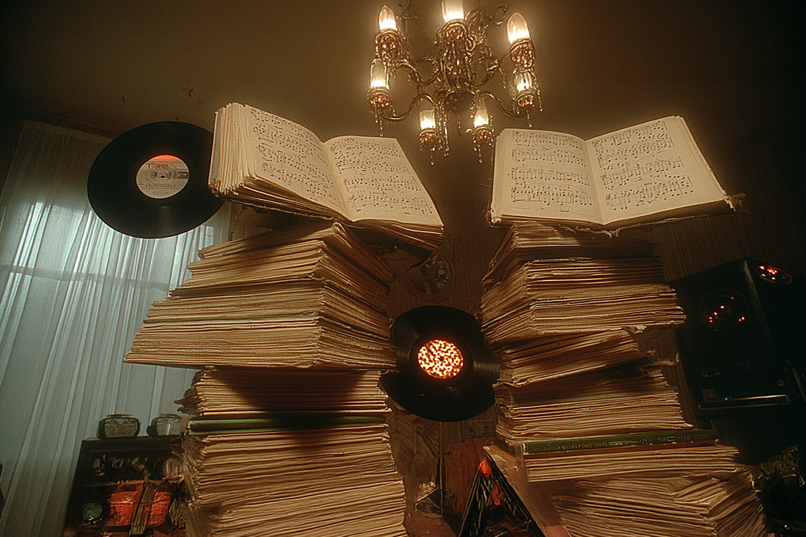
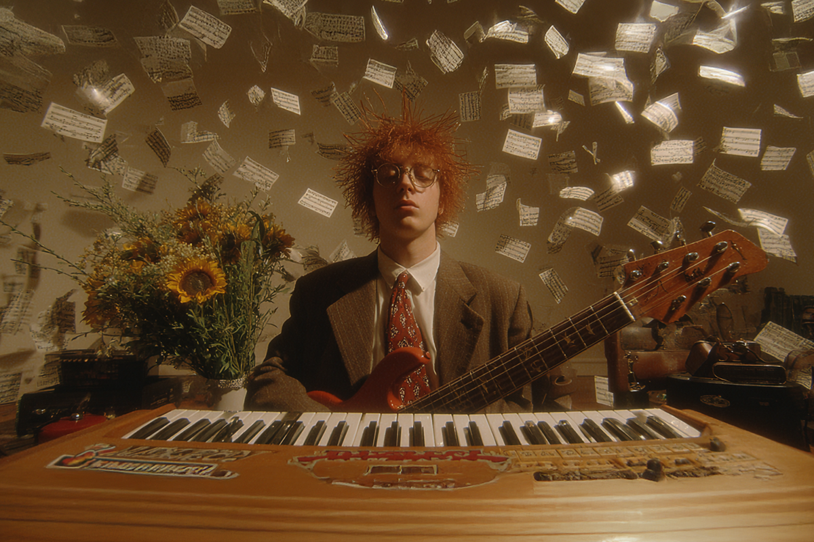

Los libros que no sabías que necesitabas
Conoce algunas de las lecturas imprescindibles para los melómanos
Conoce algunas de las lecturas imprescindibles para los melómanos
En esta publicación colisionan dos mundos que, muchas veces, se guiñan los ojos, pero que caminan de forma paralela.
No son pocas las ocasiones en que los amantes de la música son, igualmente, amantes de la lectura. Dos pasatiempos que no necesariamente van de la mano, pero que tienen en común la pasión por las artes, la entretención y, por qué no, el desarrollo del pensamiento crítico.
Por eso, en Compara nos animamos a armar una lista diversa de libros que tienen en común posicionar como foco principal a la música.

El vocalista de los incomparables Talking Heads cambió el micrófono por la pluma y nos dejó un libro clave para entender cómo la tecnología ha influido en el desarrollo de la música y como, estos mismos avances, han influido en cómo sentimos y entendemos lo que escuchamos.
Este relato, muy bien documentado, está lleno no solo de anécdotas autobiográficas, sino que también de repasos a la música del siglo XX y cómo ha cambiado desde aquel siglo, hasta lo que nos moldea la ecuación musical en la actualidad.
“¿Por qué una canción es capaz de hacerte llorar?”, sentémonos a conversar y a entender cómo funciona nuestro cerebro cuando escuchamos ciertas canciones.
Daniel J. Levitin, reconocido autor, músico y científico norteamericano, hizo este ejercicio con seis canciones, que son las protagonistas de una de sus óperas primas y el bestseller internacional titulado “El cerebro musical”.
En este libro el autor enlaza estos seis tracks a diferentes emociones, ya que la música no solo impacta de manera decisiva en nuestra mente, sino que también tiene el poder de moldear nuestros vínculos sociales y a comunidades completas a lo largo de la historia.
¿Seguidor de la historia japonesa y de su música? El resumen que te hace Julian Cope, renombrado músico, autor y poeta británico, te puede hacer perfecto sentido y, seguramente, te abrirá el repertorio musical nipón hasta regiones insospechadas.
El trabajo de Cope es exhaustivo, anecdótico y contado desde una cronología histórica, que, creo, es una de las mejores opciones para entender el contexto y los porqués tras las decisiones musicales de muchas bandas insignes desde que se comenzó a interpretar el rock & roll (y todas sus variantes) en Japón.
Igualmente, si te gustan las recomendaciones y las pausas en la lectura para darle un vistazo a la historia en formato de imágenes, este podría ser un libro ideal para ti.

Desde la ciencia de la música misma, uno de los nombres importantes de la etnomusicología y antropología, John Blacking, arma un libro imprescindible para los estudiosos del sonido y las sociedades.
En este trabajo, Blacking estudia en profundidad las culturas musicales desde la premisa “si todos los hombres somos capaces de hacer música, ¿por qué se considera una actividad restringida a unos pocos?”
Como una crítica al entramado que se crea desde los comportamientos sociales, los contextos y la música, el etnomusicólogo enseña a través de la experiencia y el ejemplo, que cada melodía y cada sonido, independiente de su lugar de origen, contiene el mismo nivel intelectual que sus pares más académicos y doctos.
Un hermoso relato autobiográfico que retrata el dolor tras la pérdida de la persona que amas a través de la nostalgia y la música.
En este sentido escrito, el crítico musical Rob Sheffield nos abre su corazón directo al luto más tremendo, y lo hace con una historia plagada de anécdotas y canciones grabadas en casetes, canciones de una época mejor, cuando Rob y Renée eran unos jóvenes amantes que se dedicaron a registrar su historia en el formato de una playlist.
“He encontrado esta cinta con la letra rizada de Renée en la etiqueta. Intuyo que la noche va a ser larga. Estamos solos Renée, las canciones que ella eligió y yo. Todas esas melodías me recuerdan a ella. No es la primera vez que hacemos esto. A veces nos encontramos a oscuras y compartimos unas cuantas canciones. Es lo más cerca que estaremos de oír nuestras voces”.
La antología "Relatos de música y músicos", preparada por Marta Salís, reúne un total de 44 cuentos y nouvelles donde la música y los músicos son los protagonistas. Con esto, te puedes hacer a la idea de que se abarca MUCHO y que hay historias para todos los gustos y, por supuesto, con la música como foco principal.
La autora le da vida a un trabajo que recoge más de dos siglos de literatura, con autores que van de Voltaire y Tolstói a Ishiguro y Julian Barnes. Además, los géneros literarios y musicales que son parte de esta lectura son diversos, abarcando desde la música popular, el jazz y el rock en el frente musical, hasta lo fantástico, lo histórico y lo romántico en el área de los géneros literarios.
Un libro que fue un éxito en el año de su lanzamiento, hace ya dos décadas. Y con justa razón.
El trabajo de estos dos académicos chilenos revisa en profundidad y de manera dinámica, la historia musical chilena a través de críticas, crónicas y entrevistas desde la perspectiva periodística y musicológica.
Lo interesante de esta lectura es que se divide en dos partes. La primera, responsabilidad de Varas, es una crónica documentada y anecdótica de la música popular del siglo XX, abarcando todos los géneros musicales más reconocidos de sus respectivas décadas. La segunda parte, a cargo de González, es un cuerpo de 130 artículos de prensa de distintas épocas, fechados por un total de casi 100 años, y que revelan cómo era percibida la música en sus respectivos contextos históricos.
Una lectura importante si es que te gusta la historia musical, sobre todo la chilena.
Bajo tintes similares, también se encuentra otro libro del musicólogo Juan Pablo González, llamado "Música Popular Chilena de Autor " (2022) que también revisa detenidamente las características e historia tras el sonido nacional.
Sabemos que, de música, hay muchísimo que diseccionar y que, cada vez, este subgénero literario tiene más vertientes a investigar y poner sobre la mesa. Por eso, esta lista tiene un poco de todo, para los gustos más variados y los lectores más inquisidores. ¿Hay algún libro musical que sea tu favorito y que creas que no debería faltar en ninguna lista?
 Cultura
CulturaSé que suena raro hablar de calor extremo mientras en Chile todos están buscando la parka más gruesa del clóset.
 Cultura
CulturaEl hecho de que estemos entrando al mes de julio no se puede creer. Pero lo que tampoco se puede creer es la cantidad de artistas que han…
 Cultura
CulturaCuando hablamos de trabajos clásicos de la música chilena, siempre se nombran los discos de Violeta Parra, Víctor Jara, Los Jaivas o…